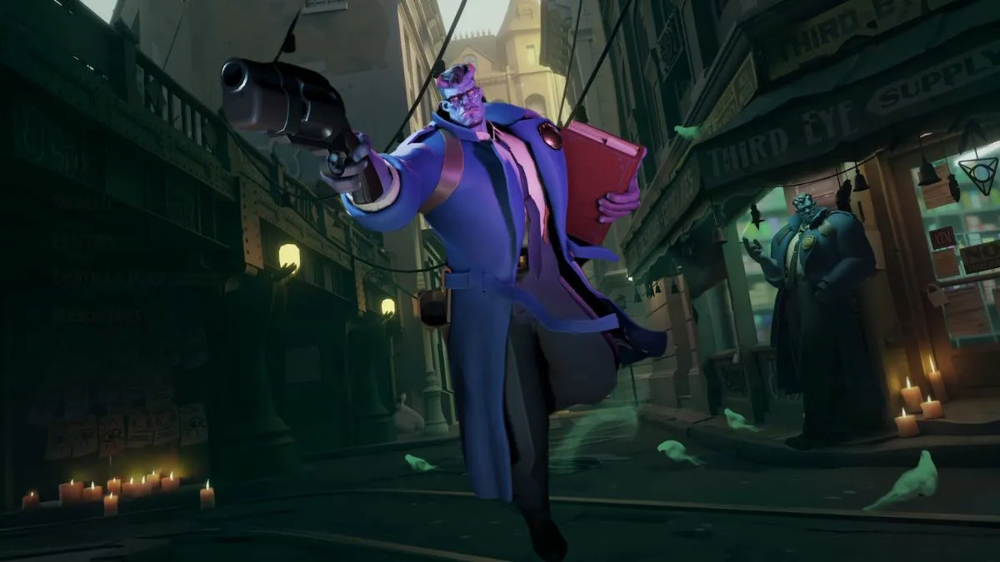

История персонажа:
Жестокий, твердолобый и сильно пьющий детектив
Abrams уже много лет является неотъемлемой
частью нью-йоркской следственной жизни. От краж
произведений искусства до пропавших без вести
людей и ритуальных убийств - Abrams не просто
брался за любое дело, которое попадало ему на
стол... он раскрывал их. Но дни его слежки за
изменяющими супругами подошли к концу в тот
день, когда он открыл дверь своего кабинета и
обнаружил этот Фолиант на своем столе.Для него
не было оставлено никаких инструкций, кроме
короткой записки, нацарапанной ониксовой кровью,
которая гласила: "Не отдавай им это". Abrams так
и не понял,откуда взялась эта штука, но, учитывая,
что в его дом вламывались со взломом, его офис
триждыподвергался обыскам, а в его машину
бросали зажигательные бомбы, он кровно
заинтересован в том, чтобы выяснить, что, черт
возьми, происходит
Abrams уже много лет является неотъемлемой
частью нью-йоркской следственной жизни. От краж
произведений искусства до пропавших без вести
людей и ритуальных убийств - Abrams не просто
брался за любое дело, которое попадало ему на
стол... он раскрывал их. Но дни его слежки за
изменяющими супругами подошли к концу в тот
день, когда он открыл дверь своего кабинета и
обнаружил этот Фолиант на своем столе.Для него
не было оставлено никаких инструкций, кроме
короткой записки, нацарапанной ониксовой кровью,
которая гласила: "Не отдавай им это". Abrams так
и не понял,откуда взялась эта штука, но, учитывая,
что в его дом вламывались со взломом, его офис
триждыподвергался обыскам, а в его машину
бросали зажигательные бомбы, он кровно
заинтересован в том, чтобы выяснить, что, черт
возьми, происходит
Способности:

Siphon Life
Высасывает здоровье врагов, которые находятся
спереди и попадают в радиус действия.

Shoulder Charge